INDUSTRIJSKI ROBOT IRB 120 · ABB
Robot u laboratoriju
IRB 120 u laboratoriju: stvarni robot i simulator
Sve što se na ovim stranicama radi u simulatoru, jednom smo napravili i na stvarnom robotu IRB 120 s ormarom IRC5 Compact i privjeskom FlexPendant: tekst nacrtan u našem simulatoru pretvorili smo u RAPID, učitali ga na robot, naučili nultu točku i napisali ga flomasterom — pa vratili robot na paletizaciju kakva je bila. Fotografije su snimljene tijekom vježbe, redom kojim su se događale, zajedno s greškama na koje smo naišli.
Fotografije iz našeg laboratorija · oznaka sustava i natpisne pločice zamagljene · klikni fotografiju za uvećanje.
- opisati stvarnu stanicu: robot, prihvatnicu s tri alata, ormar IRC5 Compact i FlexPendant
- provesti put od G-koda iz simulatora do RAPID modula učitanog u kontroler
- naučiti nultu točku, pustiti probu u zraku i ispis flomasterom
- prepoznati česte poruke kontrolera i riješiti ih
- povezati svaki korak na robotu s istim korakom u simulatoru
Robot, prihvatnica i ormar
Robot stoji na aluminijskom stolu s utorima. Na prirubnici je prihvatnica s tri alata: vakuumska sisaljka, pneumatski prsti (izlaz DO_0_gripper) i bočni držač flomastera. Prihvatnica je naša konstrukcija, otisnuta na 3D pisaču — ista je u 3D modelima naših simulatora. Polazni program robota je paletizacija drvenih kockica 60 × 100 × 18 mm: modul MainModule, rutina main, alat tool0, točke p10, p20, p30, p40…
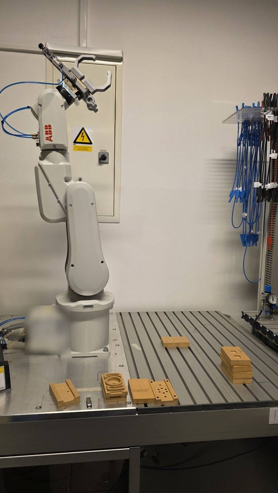

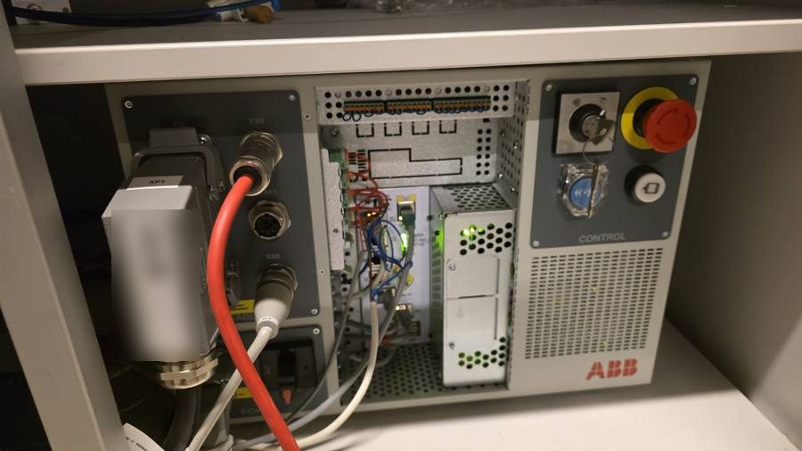
Unutrašnjost ormara i robota po dijelovima pogledaj u Upoznavanju robota.
FlexPendant: gdje je što
Robot se cijelo vrijeme vježbe giba u načinu Manual, uz brzinu spuštenu na 25 %, i samo dok je tipka za omogućavanje na stražnjoj strani privjeska pritisnuta do pola. Pusti li se tipka, ili stisne do kraja, motori se isključe — to je najbrže zaustavljanje. Na zaslonu: ☰ gore lijevo otvara glavni izbornik (Program Editor, Jogging, Program Data, Backup and Restore), oblačić s figurom je dnevnik događaja, traka dolje pokazuje otvorene prozore, a kvadrat ROB_1 dolje desno brze postavke (način gibanja, alat, radni objekt, brzina).
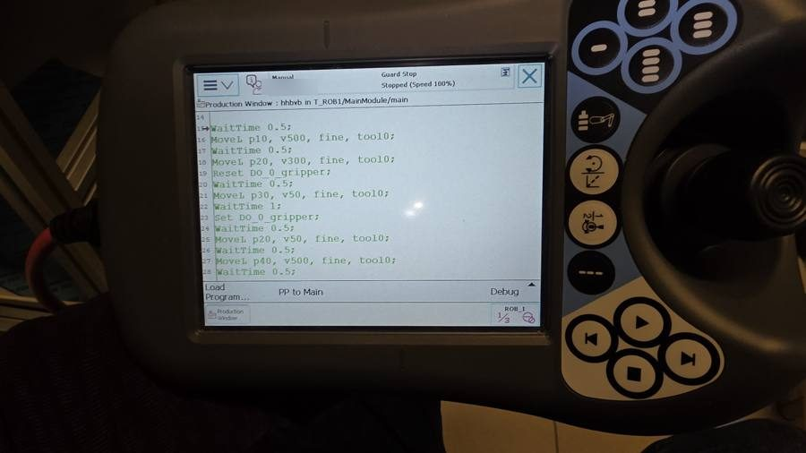
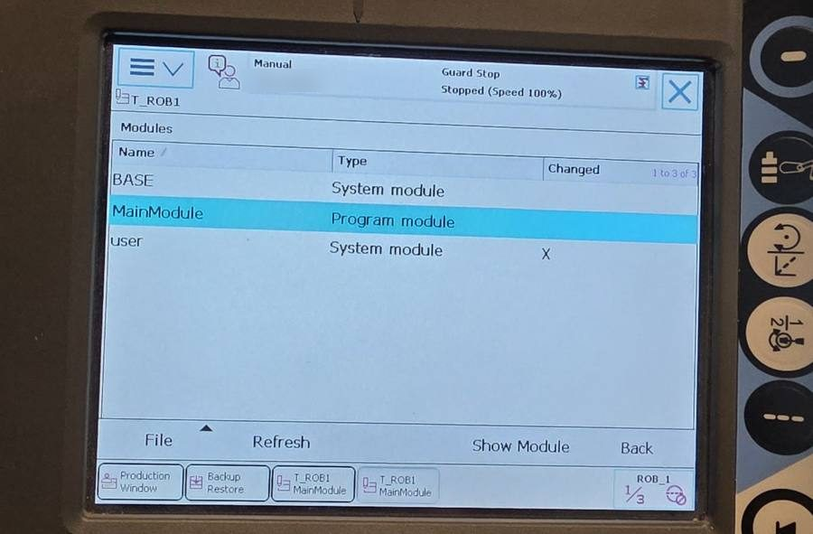
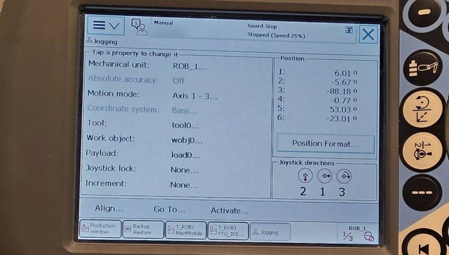
Raspored osi na palici uvijek piše u okviru Joystick directions (npr. „2 1 3”): u načinu Axis 1–3 palica gore-dolje giba os 2, lijevo-desno os 1, a zakretanje glave os 3; u načinu Axis 4–6 isto vrijedi za osi 5, 4 i 6. Ručno vođenje u simulatoru vježbaš na virtualnom FlexPendantu.
Od G-koda do RAPID-a i učitavanje modula
- Sigurnosna kopija. Prije svake promjene: ☰ → Backup and Restore → Backup Current System…, odredište USB. Restore nije gumb za poništavanje: vraća program i postavke i ponovno pokreće kontroler, ali ne pomiče robota.
- G-kod iz simulatora. Tekst se nacrta u simulatoru IRB 120 crta flomasterom, koji provjeri doseg i spremi crtež kao G-kod (.nc). Ishodište je donji lijevi kut crteža; G0 je prijelaz s podignutim flomasterom, G1 crtanje.
- Pretvorba u RAPID. Pretvarač u pregledniku svaki G0/G1 zapiše kao
MoveL Offs(pNula, x, y, z)— pomak od jedne naučene točke. Orijentacija prirubnice za vrijeme pisanja se ne mijenja, pa vrh flomastera prati prirubnicu i alat ne treba posebno mjeriti. - Učitavanje. Program Editor → Modules → File → Load Module (ne Load Program, koji bi zamijenio cijeli program) → potvrda gubitka program pointera → datoteka s USB-a.
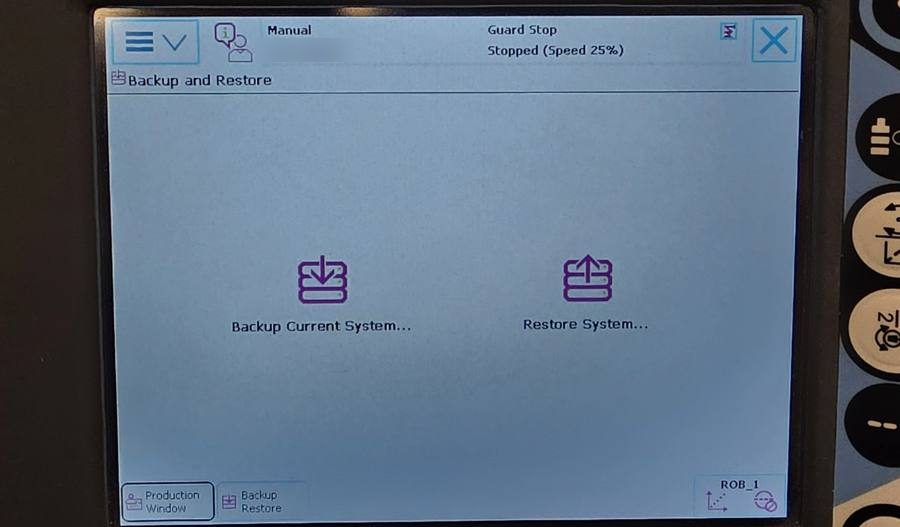
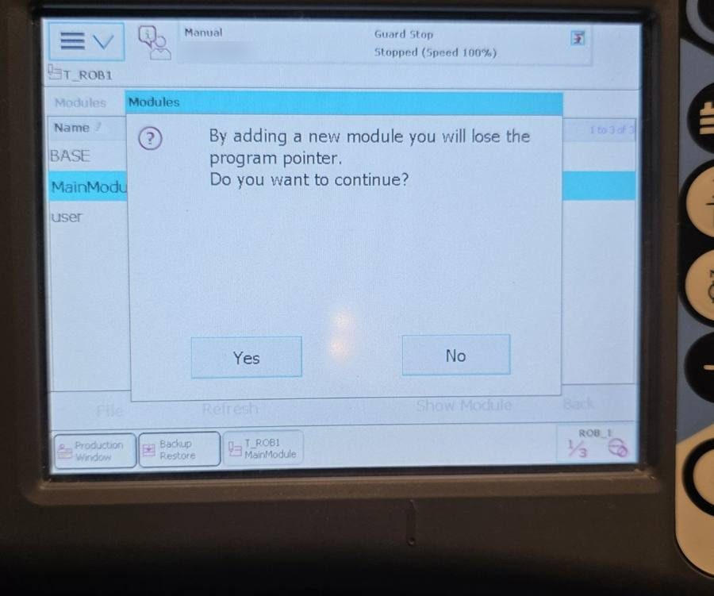
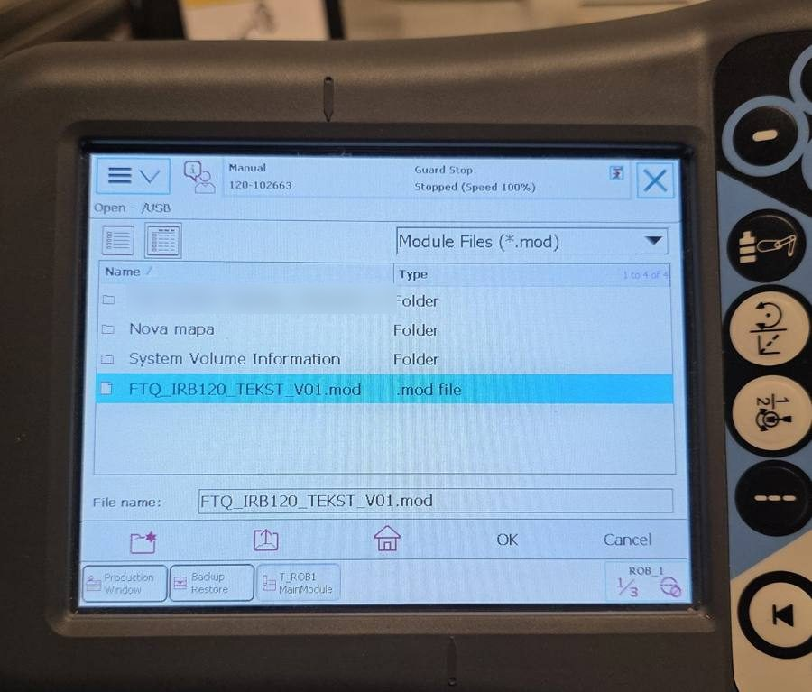
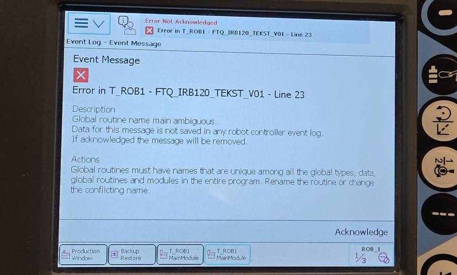
PROC main(), a main već postoji.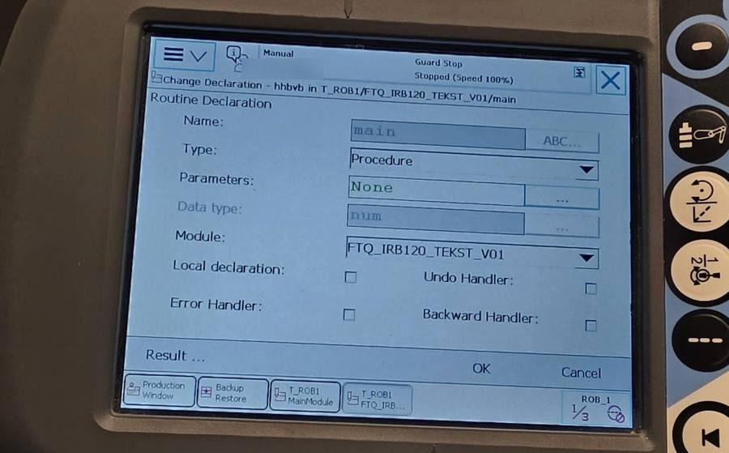
Alat, nulta točka, proba u zraku i ispis
Flomaster je u bočnom držaču, okomito na os prirubnice. Postupak određivanja alata s četiri točke uz zadanu orijentaciju (TCP default orient.) uzima smjer osi z od prirubnice, ne od flomastera — program bi „crtao” bočnom stranom flomastera. Zato smo zglob okrenuli tako da flomaster gleda okomito dolje, tu orijentaciju više nismo mijenjali i radili smo s alatom tool0.
- Nulta točka. Vrh flomastera dovede se na papir u donji lijevi kut budućeg teksta, u rutini
FTQ_Nulaoznači se naredba i pritisne Modify Position. Ta poza određuje i razinu pisanja i orijentaciju flomastera. - Proba u zraku. Varijabla
zProbaveća od nule pomakne cijeli tekst iznad papira: robot prođe sve pokrete, a flomaster ne dodiruje papir. - Ispis. S
zProba := 0robot napiše tekst; na kraju se vrati 15 mm iznad nulte točke. - Povratak. Probni moduli se spreme na USB i uklone (u RobotWareu 6: Delete Module — datoteka na USB-u ostaje), program pointer vrati u
maini paletizacija radi kao prije.
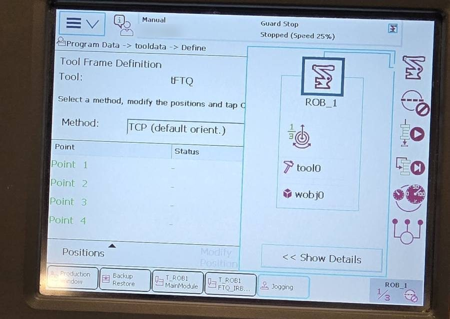
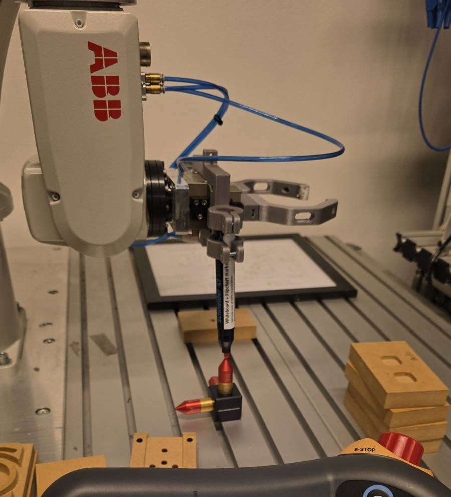
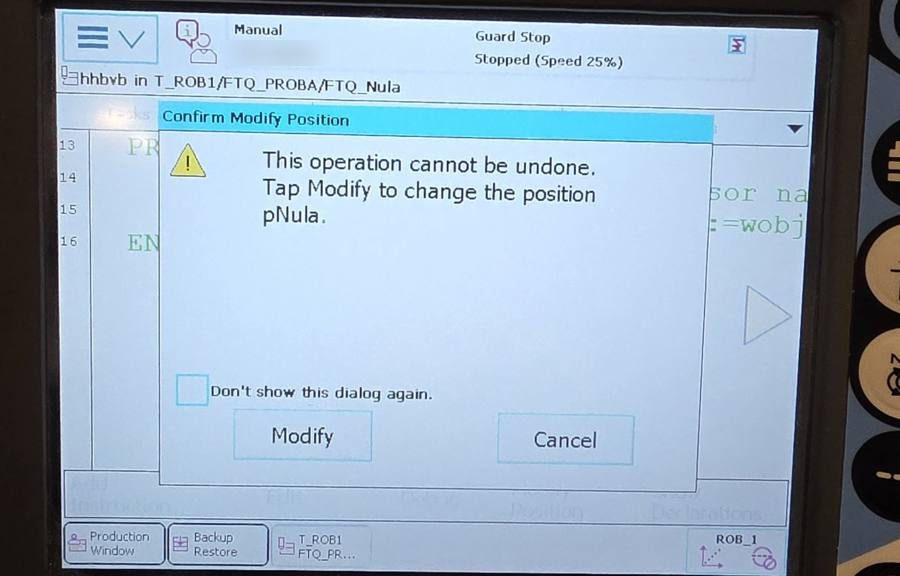
pNula: operacija se ne može poništiti.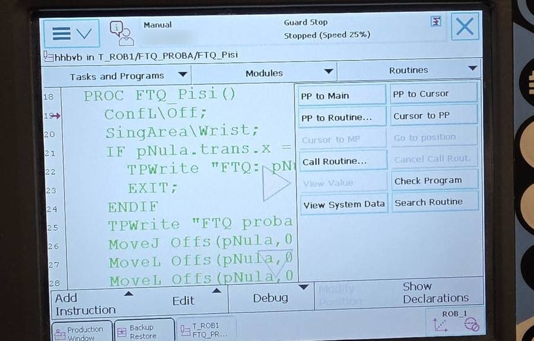
FTQ_Pisi: ConfL\Off, SingArea\Wrist, provjera je li pNula naučena, pa MoveL Offs.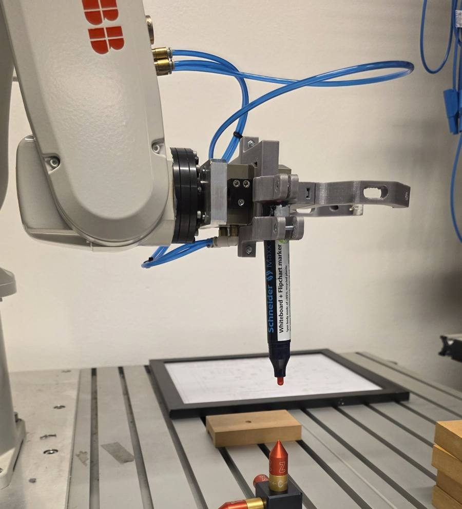
Zamke na koje smo naišli
| Poruka ili simptom | Uzrok | Rješenje |
|---|---|---|
| Global routine name main ambiguous | Dodatni modul ima vlastitu rutinu main. | Routines → File → Rename (ne Change Declaration); dodatni moduli nikad nemaju PROC main(). |
| Module name … ambiguous (modul#2) | Ime rutine jednako imenu modula (RAPID ne razlikuje velika i mala slova) ili je modul učitan dvaput. | Preimenuj rutinu; prije učitavanja pogledaj popis modula. |
| Alat „crta bočno” | Flomaster je okomit na os prirubnice, a metoda s četiri točke uzima orijentaciju prirubnice. | Zglob okrenut i orijentacija stalna; pomaci Offs s alatom tool0. |
| 50028 Jog in wrong direction | Os je na granici radnog područja. | Acknowledge, način Axis 1–3 ili 4–6, palica u suprotnom smjeru. |
| 90211 Two channel fault, Enable Chain | Tipka za omogućavanje stisnuta do kraja ili neravnomjerno. | Pusti, pričekaj nekoliko sekundi, Acknowledge, pa lagano do pola. |
| 20051 Not allowed command | Naredba bez uključenih motora, ili drugi program (RobotStudio) drži pravo pisanja. | Prvo tipka za omogućavanje, zatim naredba; u RobotStudiju otpusti Write Access. |
| 50436 Robot configuration error | MoveL bi morao proći iz jedne konfiguracije zglobova u drugu. | Osi u početnu pozu, pa Go To Position na cilj; vidi konfiguracije inverzne kinematike. |
| Regain Request | Robot je pomaknut nakon zaustavljanja programa. | Ako je robot na cilju: No pa Yes; inače Yes — robot se vrati na putanju. |
| „Program nije krenuo” | Nakon PP to Routine pokazivač stoji na prvom retku rutine. | Gledaj položaj robota, ne strelicu programskog pokazivača. |
| Nema naredbe „Unload” | RobotWare 6 je nema pod tim imenom. | Delete Module (datoteka na USB-u ostaje). |
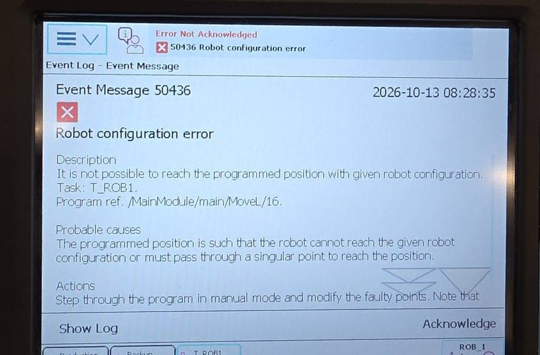
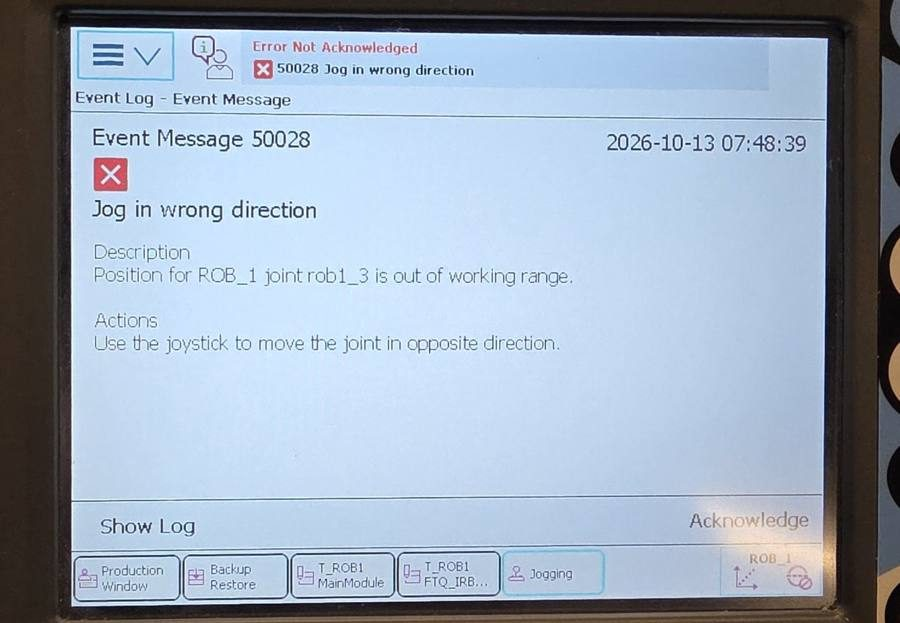
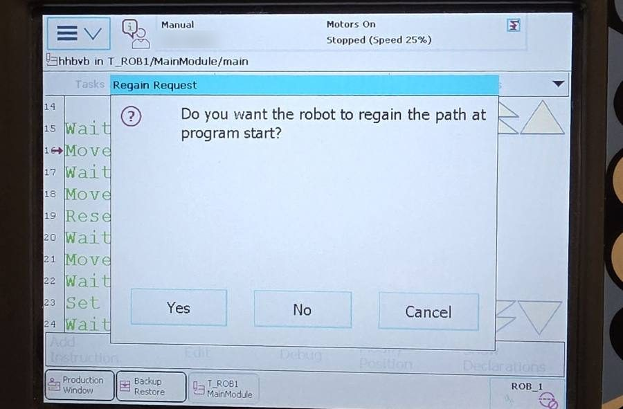
Stvarno i simulirano: isti koraci
| Korak na stvarnom robotu | Gdje ga vježbaš u simulatoru |
|---|---|
| Dijelovi robota, ormar IRC5 Compact, FlexPendant | Upoznavanje robota — 3D, rastavljanje, animacije |
| Ručno vođenje, Axis 1–3 / 4–6, Linear | IRB 120 u petlji — virtualni FlexPendant |
| Tekst → G-kod, provjera dosega | IRB 120 crta flomasterom |
| Učitavanje modula, PP to Routine, Modify Position, zamke s imenima | IRB 120 u petlji — iste tipke i iste poruke kontrolera |
| Konfiguracija robota, greška 50436, singularnost zapešća | Izravna i inverzna kinematika — osam rješenja za istu točku |
| Programiranje izvan robota, virtualni kontroler | RobotStudio |
Što simulator ne radi
Naši simulatori ne izvode ABB-ov softver kontrolera: kinematiku i poruke računaju vlastitim kodom. Pravi robot ima granice osi, konfiguracije, kašnjenja i sigurnosni lanac koji simulator samo oponaša. Zato se svaki program na stvarnom robotu najprije pušta u ručnom načinu, smanjenom brzinom i „u zraku”.
Dalje: Pick & place na pravom robotu — korak po korak · Industrijski robot IRB 120 — naslovnica.